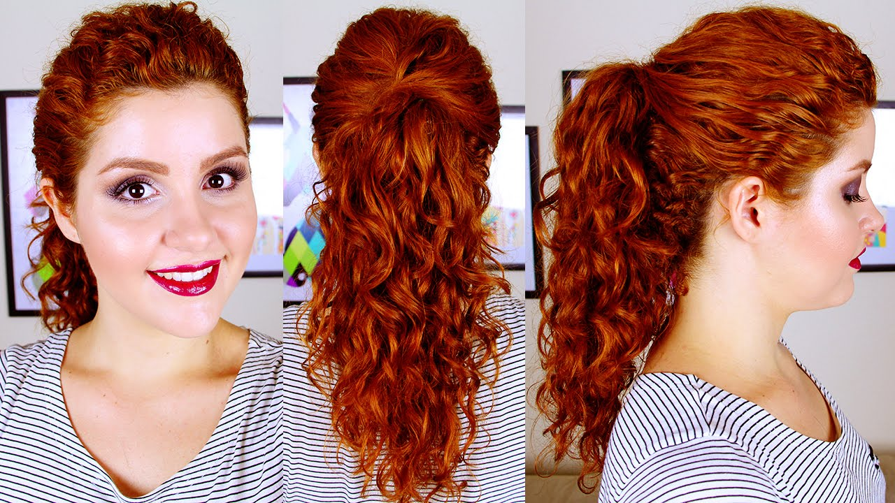
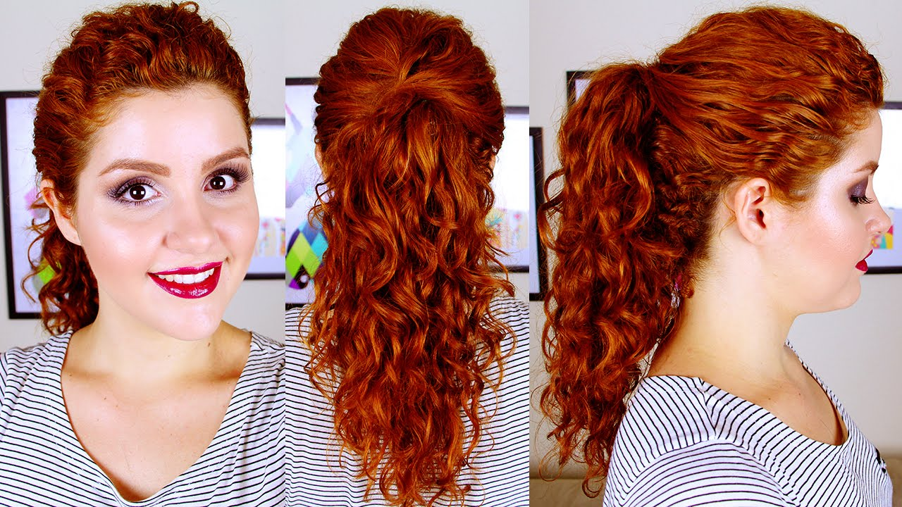

Sejam muito bem vindas no nosso blog!
Esse espaço foi feito para trocarmos idéias, experiências, truques de belezas e muito mais.
Bom, meu nome é Naiane e sou uma cacheada que já passou por quase todas as fases da vida quando se trata de cabelo. Do liso ao cacheado e também daquela modinha de querer ter só a franjinha lisa e o resto cacheado, e muitas outras fases que toda cacheada passa antes de se descobrir e se assumir de verdade.
Juntas aqui queremos incentivar você a assumir e aceitar os cachos que Deus te deu e dizer que SIM,é possivel sermos bonitas, termos autoestima e nos sentirmos pra cima com nossos cabelos.
Há anos atrás o sistema social rotulava de forma sutil de que só "O liso reinava",e que só era bonita quem tinha o cabelo liso e por muito tempo acreditamos nessa farça.Mas convenhamos que antigamente não tínhamos tanto aceso á internet e por isso o conhecimento era limtado para muitas pessoas, a grade de profissionais ensinando de como ter um cabelo "cacheado" bonito e bem cuidado era bem raro.Pois os profissionais não tinham acesso a qual era o produto certo pra cada tipo de cabelo, já que ainda muitos não sabiam que os cachos eram classificados por número e letras do tipo 2 ao 4, sendo dividido da seguinte forma: cachos do tipo: 2a 2b 2c da classe "ONDULADOS", cachos 3a 3b 3c da classe "CACHEADOS" e os cachos 4a 4b 4c da classe "CRESPOS".
Eu naiane, sempre tive cachos, mais como toda adolescente não gostava e andava pra cima e pra baixo com ele preso. Quando a definitiva ficou famosa, eu tinha 15 anos e conheci uma pessoa que tinha um cabelo bem macarrãozinho, e de repente ela chega em casa mais esticada que o diaxo rs. Amei o resultado e experimentei no meu hair, seria hipócrita em dizer que não amava meu cabelo liso,sim eu amava, gostava da "praticidade" , mais depois de 3 meses vi que não era só flores, a raiz cresce minha fia. Não é novidade pra ninguém que me tornei uma refém da chapinha e alisamentos, e essa jornada durou 10 anos da minha vida.
Depois dessa longa jornada, comecei a observar que existia grupos nas redes sociais que falava do assunto, achei muito interessante e fui estudar o caso.
Conheci algumas Yotubers e amei suas histórias e cabelos ,não demorou muito pra eu decidir que faria o mesmo, chamei minha prima Rebeca pra ir na minha casa,pra realizar o corte e me fornecer dicas pra minha nova fase da vida, já que ela é uma viciada em cabelo cacheado rs.
Hoje com quase um ano de mudança me sinto feliz e bonita, e sim me aceito, honestamente não é tão fácil cuidar dos cachos,pra quem gosta dele sempre perfeito, mais sem dúvida o resultado do cabelo depois de uma excelente finalizção é fantástico.
É com muito orgulho que te convido a fazer parte do time das cacheadas, se assuma, se ame e se aceite, esse é nosso dilema e estilo de vida.
Liberte-se da chapinha e se torne uma rainha! :)